以上我们概要介绍了宇宙学的标准模型即大爆炸宇宙学说。这一学说的主要理论预言，例如宇宙微波背景黑体辐射和氦元素丰度等，都已被观测所证实，从而使得大爆炸宇宙论在今天已被人们广泛接受。但是，这并不是说这一理论已十分完善了。目前仍然有不少重要问题，甚至是严重的挑战，有待我们继续努力探索。下面扼要介绍几个主要的前沿课题。
我们先从标准宇宙学模型遇到的两个严重问题，即两个疑难开始。第一个疑难和宇宙的曲率有关。根据爱因斯坦广义相对论得到的宇宙动力学方程，有一个重要参数，即宇宙的曲率 k 。如果这一曲率是正的，宇宙就是闭合的、有限的。如果曲率是零或者是负的，宇宙就是平直的或者开放的，且这两种情况下宇宙都是无限的。根据标准大爆炸宇宙模型，在极早期由于物质密度极高，故曲率效应不明显。但随着宇宙膨胀、物质密度的下降，时至今日，应该有足够的观测证据，使我们对宇宙的曲率作出正确的判断。也就是说，宇宙的有限或无限，今天应该在观测上看到明显区别。我们就此来分析一下。
弗里德曼方程(7.5.8)可以改写为(这里先不考虑宇宙学常数,故设 \Lambda=0 )
1 = \frac {8 \pi G}{3 H ^ {2}} \rho - \frac {k}{H ^ {2} R ^ {2}}\tag{7.7.41}
其中 k 的取值可以是 k = 0, \pm 1 。按照(7.5.13)的方式定义宇宙密度参数
\Omega \equiv \frac {\rho}{\rho_ {c}} = \frac {8 \pi G \rho}{3 H ^ {2}}\tag{7.7.42}
(7.7.41)化为
1 = \Omega - \frac {k \Omega}{8 \pi G \rho R ^ {2} / 3} \Rightarrow 1 - \frac {1}{\Omega} = \frac {k}{8 \pi G \rho R ^ {2} / 3}\tag{7.7.43}
辐射为主时期 \rho \propto R^{-4} , 物质为主时期 \rho \propto R^{-3} , 故上式给出
\left| 1 - \frac {1}{\Omega} \right| \propto | k | \times \left\{ \begin{array}{l l} R ^ {2} & (\text {辐射为主}) \\ R & (\text {物质为主}) \end{array} \right.\tag{7.7.44}
因此，无论 k 的取值如何，当 R \to 0 时都会有 \Omega \to 1 。这说明宇宙极早期，曲率的作用不明显，即使 k \neq 0 ，宇宙也表现为平直（ \Omega \to 1 即意味着时空趋近平直）。但是，当宇宙膨胀使得 R 变得很大时，曲率的作用就应当表现出来，即由(7.7.44)，当 R 很大时应当看到 \Omega 与1有明显偏离。我们现在来计算一下，从宇宙诞生的时刻（即普朗克时间）直到今天， R 增大了多少倍。普朗克时间是 t_{\mathrm{pl}} \approx 10^{-43} \mathrm{~s} ，现在宇宙的年龄是 t_0 \approx 10^{10} \mathrm{~年} \approx 10^{17} \mathrm{~s} ，中间由辐射为主到物质为主的转变时刻约为 t_{eq} \approx 10^4 \mathrm{~年} \approx 10^{11} \mathrm{~s} 。注意到辐射为主时期 R(t) \propto t^{1/2} （见(7.6.23))，物质为主时期 R(t) \propto t^{2/3} （见(7.6.24))，由这些数据可以计算出，从普朗克时间到现在， R 的变化是
\frac {R \left(t _ {0}\right)}{R \left(t _ {\mathrm{pl}}\right)} = \frac {R \left(t _ {e q}\right)}{R \left(t _ {\mathrm{pl}}\right)} \frac {R \left(t _ {0}\right)}{R \left(t _ {e q}\right)} \approx \left(\frac {1 0 ^ {1 1}}{1 0 ^ {- 4 3}}\right) ^ {\frac {1}{2}} \times \left(\frac {1 0 ^ {1 7}}{1 0 ^ {1 1}}\right) ^ {\frac {2}{3}} \approx 1 0 ^ {3 1}\tag{7.7.45}
但要计算(7.7.44)所示的 |1 - 1 / \Omega| ，还要注意到，两个时期应分别正比于 R^2 和 R 。这样从 t_{\mathrm{pl}} 到 t_0, |1 - 1 / \Omega| 的总变化将是
\left| 1 - \frac {1}{\Omega} \right| _ {t _ {0}} / \left| 1 - \frac {1}{\Omega} \right| _ {t _ {\mathrm{pl}}} \approx \left(\frac {R (t _ {e q})}{R (t _ {p l})}\right) ^ {2} \frac {R (t _ {0})}{R (t _ {e q})} \approx \left(\frac {1 0 ^ {1 1}}{1 0 ^ {- 4 3}}\right) \times \left(\frac {1 0 ^ {1 7}}{1 0 ^ {1 1}}\right) ^ {\frac {2}{3}} \approx 1 0 ^ {5 8}\tag{7.7.46}
既然 |1 - 1 / \Omega| 有这样大的变化，就很难理解，为什么时至今日，各种观测结果仍倾向于 \Omega_0\sim 1 。换句话说，如果今天的 |1 - 1 / \Omega_0|\sim 1 ，则普朗克时刻应有
\left| 1 - \frac {1}{\Omega} \right| \approx 1 0 ^ {- 5 8} \Rightarrow \Omega \approx 1 \pm 1 0 ^ {- 5 8}\tag{7.7.47}
从几率的角度看, 这也是很难理解的: 原初大爆炸时宇宙的密度 \rho 和哈勃常数 H , 应当是两个相互独立的随机变量, 而由这两个随机变量给出的组合变量 \Omega (见(7.7.42)), 却如此精密地等于 1, 与 1 的偏离只是在小数点后第 58 位! 这样的巧合是不可思议的。 \Omega_0 \sim 1 即意味着宇宙从开始到现在都是平直的, 这就是标准宇宙学模型遇到的平性疑难。
另一个问题来自观测到的宇宙微波背景辐射的高度均匀与各向同性。7.3节中已经谈到，当我们朝四面八方看去时，各个方向背景辐射的温度涨落都只有约 10^{-5} 。实际上，这用标准宇宙学模型是无法解释的。我们用图7.45表示的宇宙时空图，对此做一个简要分析。图中纵轴表示宇宙时间，横轴表示宇宙空间，并取光速c=1。为简单起见，我们只画了一维空间，且图中P点代表观测者今天的时空位置。今天我们接收到的背景辐射，是在最后散射面所对应的 t_{R} 时刻，从空间不同方向发射的。我们今天能观测到的最后散射面的空间范围，即相当于 A, B 两点之间的距离，它的大小是（参见(7.4.24)，
但积分限有所改变)
\overline {{{A B}}} = R (t _ {0}) \int_ {t _ {R}} ^ {t _ {0}} \frac {\mathrm{d} t}{R (t)} \approx 3 t _ {0}\tag{7.7.48}
其中用到物质为主时 R(t) \propto t^{2/3} 。这一结果表明， \overline{AB} 的大小和今天的宇宙视界的大小基本相同。宇宙微波背景辐射的高度均匀与各向同性，说明距离很远的 A, B 两点之间一定存在因果联系，结果造成这两点之间，各处的温度涨落幅度大致相同。因
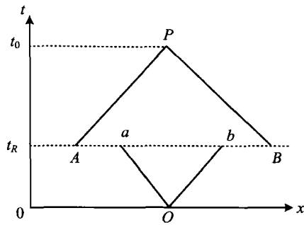
图 7.45 宇宙学视界图解而这也就表明,我们今天看到的全部宇宙,历史上曾经处于同一个有因果联系的区域。
我们再来计算一下，从宇宙创生 t=0 到 t_{R} 时刻，因果联系（即光信号）到底能传播多远。这相当于今天看到的 t_{R} 时刻的视界大小，也就是 t_{R} 时刻的视界膨胀到今天的大小，即图 7.45 中 \overline{ab} 的长度
l = \overline {{{a b}}} = R (t _ {0}) \int_ {0} ^ {t _ {R}} \frac {\mathrm{d} t}{R (t)}\tag{7.7.49}
从 t = 0 到 t_R 可认为是辐射为主，因而有 R(t)\propto t^{1 / 2} ，故
l \approx \frac {R (t _ {0})}{R (t _ {R})} t _ {R}\tag{7.7.50}
另一方面， t_{R} 时刻发射的光子到观测者所经过的距离 d 近似是 d \approx t_{0} - t_{R} \approx \overline{AB} （因 t_{R} \ll t_{0} ），故我们今天所看到的 t_{R} 时刻的视界在空间所张的角度 \theta 是（亦参见图 7.31b）
\theta \simeq \frac {l}{d} = \frac {\overline {{a b}}}{\overline {{A B}}} \approx \frac {R (t _ {0})}{R (t _ {R})} \frac {t _ {R}}{t _ {0}}\tag{7.7.51}
因为从 t_R 到 t_0 是物质为主， R(t) \propto t^{2/3} ，再利用 1 + z = R(t_0) / R(t) ，上式给出
\theta \approx \left(\frac {R (t _ {R})}{R (t _ {0})}\right) ^ {1 / 2} = \left(\frac {1}{1 + z _ {R}}\right) ^ {1 / 2}\tag{7.7.52}
其中 z_{R} 是 t_R 时刻相应的宇宙学红移，近似为 z_{R} \approx 1000 。这样，我们得到这一张角为
\theta \approx 1 / \sqrt {1 0 0 0} \approx 2 ^ {\circ}\tag{7.7.53}
这就是说，宇宙背景辐射中有因果联系的区域，今天在天空中的张角应只有大约 2^{\circ} 。超过这一角度的两点之间，例如南天和北天隔地球相对的两点之间，温度涨落的幅度不会有任何因果关系，它们可以相差任意大小。但观测的结果不是这样的，而是全天空背景辐射的高度均匀各向同性。这就是标准宇宙学模型遇到的视界疑难，或称平滑性疑难。
为了解决上述“平性”和“视界”两大疑难，20世纪80年代初，古斯(A. Guth)和林德(A. Linde)等提出了所谓的“暴胀”(Inflation)宇宙学模型。这一模型的关键在于真空的对称性自发破缺。按照这一理论，真空可以用一个标量 \phi 场（希格斯(Higgs)场)来描述，真空自由能密度 F(\phi, T) 是 \phi 和温度 T 的函数，此函数的极小值对应的状态称为真空态。当宇宙介质的温度高于某一临界温度 T_{c} 时，自由能密度当 \phi = 0 时为极小(图7.46a)，此时真空态是物理真空，而且是对称真空。在温度降到接近 T_{c} 时，自由能 F 开始在 \phi \neq 0 处出现新的极小(图7.46b)，但相对
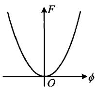
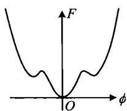
T \gg T _ {c}
T > T _ {c}
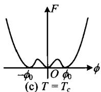
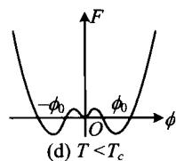
于 \phi = 0 的真空，它们的自由能还是较高，因而是亚稳的假真空。当 T = T_{c} 时（图7.46c），真假真空具有相同的自由能，即若干真空态发生了简并，这是真空即将发生相变前的临界状态。当温度降到低于 T_{c} 时（图7.46d），此时 \phi = 0 处的极小已不再是物理真空而成为亚稳的假真空，物理真空现在位于 \phi \neq 0 处，且已不再具有 \phi 场原有的对称性，成为对称破缺真空。因此我们看到，当宇宙介质从 T > T_{c} 降温到 T < T_{c} ，真空态要发生一次突变，这就是对称性自发破缺所引起的真空相变。
图 7.46 真空的自由能随温度的变化
临界真空态的能量密度 \rho_{vac} \approx T_{c}^{4} 。弱电统一的真空相变对应的温度大约是 10^{2} GeV，而大统一理论的真空相变对应的温度大约是 10^{15} GeV。
当宇宙膨胀使温度降到略低于 T_{c} 时，应当发生真空态从 \phi = 0 到 \phi = \phi_0 （或 \phi = -\phi_0 )的跃迁。但由于这两者之间隔着势垒，跃迁不能立刻发生。宇宙此时继续膨胀，温度继续降低，使得尚未发生相变的 \phi 场进入过冷态。这时真空的能量密度仍保持为 \rho_{\mathrm{vac}}\approx T_c^4 ，而辐射和粒子气体的温度却按 \rho_r\approx T^4 的规律下降。因此宇宙总能量密度以真空的能量密度为主，辐射及粒子的贡献变得次要了。当相变在某个显著低于 T_{c} 的温度上发生时， \phi = \pm \phi_0 的物理真空的能量密度，已远低于 \phi = 0 的假真空的能量密度。这两种真空能量之差将作为相变时的潜热放出，使得宇宙在真空相变后被重新加热。此时新的物理真空的能量又远小于宇宙介质的能量了，宇宙又恢复了以辐射和粒子为主的“正常”状态。
再讨论一下宇宙的膨胀，即 R(t) 的变化情况。在相变发生前， T \gg T_c, \rho_r \gg \rho_{\mathrm{vac}} ， R 按照辐射为主时的规律 R \propto T^{-1} \propto t^{1/2} 膨胀。当 T \leqslant T_c ，宇宙处于相变前的过冷态，此时 \rho_{\mathrm{vac}} \approx T_c^4 \gg \rho_r ，即真空能量为主导，因而(7.5.26)给出的 R(t) 的演化方程现在是（忽略宇宙学常数项及宇宙曲率项）
\left(\frac {\dot {R}}{R}\right) ^ {2} = \frac {8 \pi G}{3} T _ {c} ^ {4}\tag{7.7.54}
令
H \equiv \left(\frac {8 \pi G}{3} T _ {c} ^ {4}\right) ^ {1 / 2}\tag{7.7.55}
则(7.7.54)的解为
R (t) \propto e ^ {H t}\tag{7.7.56}
这表明宇宙按指数规律膨胀！如果取大统一相变的 T_{c} \approx 10^{15} \mathrm{GeV} ，可以得出 H \approx 10^{35} \mathrm{s}^{-1} 。宇宙约在 t \approx 10^{-35} \mathrm{s} 时进入过冷态 ( T \leqslant T_{c} )。若相变延迟到 t \approx 10^{-33} \mathrm{s} 发生，则此阶段宇宙将膨胀 e^{100} \approx 10^{43} 倍！这就是所谓的“暴胀”。
相变完成后，宇宙介质由 \phi = \phi_{0} 或 \phi = -\phi_{0} 的对称破缺真空和高温辐射气体所构成。这时又重新有 \rho_{r} \gg \rho_{vac} ，故宇宙又开始按 R \propto T^{-1} \propto t^{1/2} 的规律正常膨胀。
宇宙在极短暂的时间内膨胀大约 10^{43} 倍，这就使得前述两个疑难问题可以同时得到解决。例如，视界（因果联系的区域）的大小近似正比于宇宙时 t，从现在起倒退回普朗克时间，视界从今天大约 10^{10} 光年缩小到 10^{-43} 光秒，两者相比为 \sim10^{60} 倍；而空间区域的大小正比于 R(t) ，若不考虑暴胀，从现在倒退到普朗克时间，目
前观测到的空间区域将缩小～ 10^{31} 倍（见（7.7.45）），这样视界的大小会远小于空间尺度，故而产生“视界”疑难。但若考虑到暴胀，时间反演后空间区域的大小将在原来 10^{31} 倍的基础上再缩小 10^{43} 倍，总的结果是缩小 10^{74} 倍，因而空间的尺度将远远小于视界的尺度（如图7.47）。这就使得我们今天看到的全部宇宙，完全可以在宇宙暴胀前处于同一个有
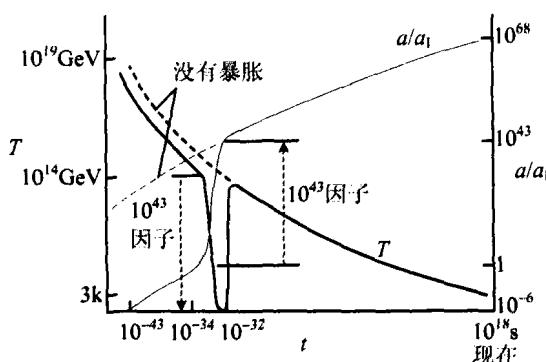
图 7.47 暴胀对宇宙尺度变化的影响因果联系的区域,这样就解决了“视界”问题。另一方面,R 的暴胀可以比作是宇宙曲率半径的急剧膨胀。例如一个二维球面,当曲率半径变得非常巨大的时候,球面就可以看成是平面,弯曲的空间就可以看成是平直的空间。这样也就同时解决了“平性”问题。
宇宙暴胀之后，真空的相变释放潜能，使宇宙重新被加热，同时相变过程中还会产生微小的不均匀性，从而引起物质密度涨落。这种微小的原初密度涨落，是演化出今天观测到的宇宙结构所必需的“种子”。暴胀理论所预言的初始扰动的谱型，是所谓的 H-Z(Harrison-Zel’dovich) 谱，它的特点是，不同（质量）尺度的扰动进入视界时，扰动的大小与尺度无关。这与 WMAP 观测到的宇宙微波背景辐射的结果是一致的。
尽管暴胀宇宙模型成功地解决了前述的宇宙平性以及视界疑难，但暴胀的机制是否果真如此，例如希格斯场的物理本质，目前还没有完全搞清楚。另一方面，暴胀模型是否是唯一的模型，这也是有疑问的。这就是说，暴胀模型的提出是为了解决“平性”和“视界”这两个疑难，但如果还有另外的模型也可以解决这两个疑难，那我们就无法对这两种模型进行取舍。在这样的情况下，只能考虑哪一种模型能解决更多的问题且更为简单。例如，暴胀模型自然地给出了原初密度扰动的H-Z谱，而目前还没有其他模型能在解决两个疑难的同时，给出原初密度扰动的H-Z谱。因而，暴胀模型目前在宇宙学中的地位还是无可替代的。对暴胀机制的进一步深入研究，不仅是宇宙学家关注的问题，也引起众多粒子物理学家和理论物理学家的强烈兴趣和关注。人们期望，对宇宙暴胀机制的彻底了解，不仅可以使我们对极早期宇宙所发生的物理过程有正确的认识，同时还可以把理论物理学希望实现的最终目标，即自然界基本相互作用的统一，再向前推进一步。因为宇宙暴胀阶段所对应的，就是粒子物理的大统一理论阶段。
上一章中已经谈到，已有许多证据表明宇宙中暗物质的存在，例如旋涡星系平展延伸的转动曲线，各种星系远大于1的质光比等。近些年来又发现星系团中广泛存在引力透镜现象（见图7.48，更多的讨论见下一小节）。这些观测表明，星系和星系团的质量中，相当大的部分来源于不发光的暗物质。
就其本质来说，暗物质可以分为两大类：重子暗物质和非重子暗物质。重子参与电磁作用，本身是可以发光的，但在某些情况下缺乏发光的条件，就变成了重子暗物质。例如不发光的行星、死亡了的恒星如温度极低的白矮星、黑矮星，以及没有引起核聚变的暗弱褐矮星等。但WMAP的观测结果表明，在整个宇宙暗物质中，重子暗物质的比率很小，宇宙暗物质主要是非重子暗物质(参见图7.17)。这一结果与根据宇宙轻元素丰度的观测得到的宇宙重子密度(见图7.30)完全一致。
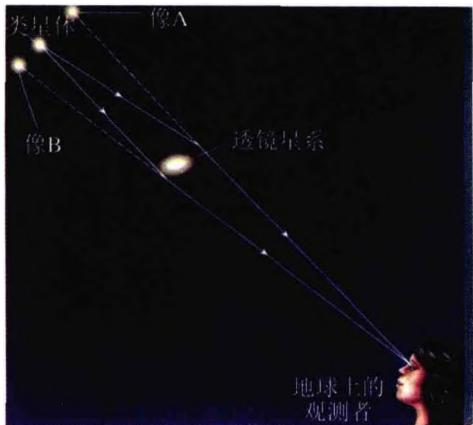
(a) 双像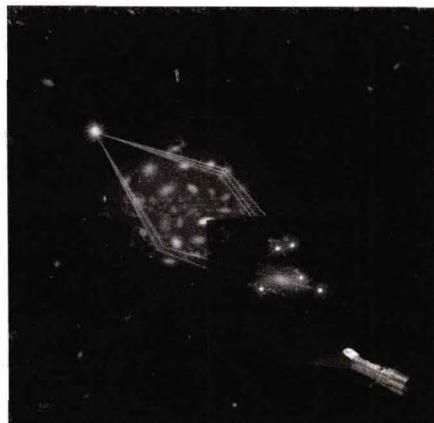
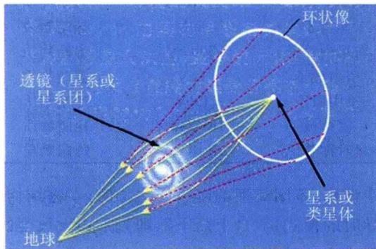
(c)爱因斯坦环 图7.48 引力透镜的形成非重子暗物质粒子不参与电磁相互作用因而不会发光，它们被称为WIMPs（Weakly Interacting Massive Particles），即有质量弱作用粒子。它们之间，以及它们与其他种类的粒子之间，只有引力作用和弱相互作用。目前我们还不知道暗物质粒子到底是什么粒子，只能猜测有一些可能的候选者（见表7.2），其中热、温、冷等物理性质表明的是，它们在退耦时随机运动速度的大小。例如，弱相互作用的退耦温度为 T_{d}\sim10^{11} K，相应的动能约为10 MeV。如果粒子的静质量 mc^{2}>kT_{d} ，则它们在退耦时具有质量大、速度慢的特点，因而称为冷暗物质(CDM)。而对于mc^{2}<kT_{d} 的粒子，它们的质量小，在退耦时的热运动速度仍接近光速，因而称为热暗物质（HDM）。如果中微子确实具有不为零的静质量，则它们就是热暗物质粒子的热门候选者。现在知道，中微子有三种类型，即电子型、 \mu 子型和 \tau 子型，它们代表三种不同的质量（能量）本征态，而且三种态之间可以相互转化，即中微子振荡。根据粒子物理的理论，不同类型中微子之间的转变即意味着中微子的静质量不为零。但直到现在为止，无论是地面实验还是天文观测，关于中微子静质量的结论只是存在一个上限，还没有确定无疑的不为零的结果。例如对三种中微子质量之和的上限估计为 \sum m_{v}<0.7eV/c^{2} ，且由 WMAP 的观测结果分析得出，宇宙中所有中微子对宇宙密度参数的贡献只有 \Omega_{v}<0.008 。介于冷、热之间的称为温暗物质（WDM），它们各方面的物理性质像是冷热两种暗物质的折中。
表 7.2 一些可能的非重子暗物质粒子候选者
| 粒子 | 近似质量 | 物理性质 |
|---|---|---|
| 轴子 | 10^{-5} eV | 冷暗物质 |
| 原初中微子 | 10~100 eV | 热暗物质 |
| 光微子 | keV | 热暗物质 |
| 右手中微子 | 500 eV | 温暗物质 |
| 引力微子 | keV | 温暗物质 |
| 重中微子 | GeV | 冷暗物质 |
| 磁单极 | 10^{16} GeV | 冷暗物质 |
| 超对称弦子 | 10^{19} GeV | 冷暗物质 |
我们在上一节中谈到，不同类型的暗物质主导时，宇宙结构的形成会有不同的模式。热暗物质主导时的模式是“自上而下”，即先形成大尺度的结构（星系团或超星系团），再逐级碎裂成小的结构（如星系）。而冷暗物质主导时的模式是“自下而上”，即先形成星系这样的小尺度结构，再逐级并合而形成越来越大的结构。数值模拟的结果表明，在热暗物质为主的宇宙中，每一个大结构的初始引力收缩都表现出很强的各向异性，通常都有一个优先的坍缩方向。其结果是，初始的团块被压扁，成为相当薄的“薄饼”，然后碎裂成较小的天体。在“薄饼”之间是大的空洞。虽然一些这样的空洞已经在真实宇宙中被观测到，但数值模拟结果给出的大尺度结构倾向于过度发展，空洞与“薄饼”之间的对比过大。
冷暗物质为主的宇宙遇到的问题正好相反:大尺度结构与观测相比显得不够,数值模拟的结果过于均匀。为解释这一差异所提出的一个看法是:我们看到的星系并没有完全示踪宇宙中真实的质量分布,即光没有完全示踪质量。例如,观测到的宇宙空洞中，也许充满了相对均匀分布的暗弱星系，但它们在观测中没有显现。这样，宇宙中的物质分布也许比望远镜中显示的要均匀得多。这也就是说，我们看到的宇宙结构也许只代表了亮星系的分布，而这些亮星系只存在于密度扰动的高峰之处(参见图7.38)。这一看法就是前面曾提到过的“偏置”(bias)的星系形成。但是，可能导致偏置形成的天体物理机制现在还不是很清楚。把偏置考虑进去，数值模拟所给出的结果，就与我们在实际宇宙中看到的图像符合得非常好。因此，冷暗物质加偏置(且宇宙学常数不为零)的模型现在被认为是最成功的模型。
总之，近二三十年来，宇宙暗物质的研究已经成为粒子物理、天体物理和宇宙学的学科交叉热点。彻底解开暗物质之谜，对确定宇宙演化模式有重大意义，也对我们了解自然界的基本物质组成有根本的意义。
遥远光源发出的光线，经过一个大质量天体的附近时会由于引力而发生偏折。光线偏折的结果可能使观测者看到光源的多重像，还可能使光源的视轮廓及视亮度发生变化，这一现象就称为引力透镜(图7.48)。产生引力透镜作用的天体称为透镜天体。透镜天体可以是恒星，也可以是星系或星系团，还可能是宇宙中的暗物质团块或暗晕。
众所周知的光线偏折的例子，是星光掠过太阳表面时引起的偏折。爱因斯坦在创立广义相对论时就曾预言，从太阳表面附近经过的光线，会由于太阳的引力而
弯曲, 从而使光源(恒星)的像产生移动。如图7.49所示的二维简单情况, 即光线始终位于光源、透镜天体以及观测者所在的平面内。设透镜天体是球对称的, 质量为 M , 观测者位于 z 轴方向, 光线也沿 z 轴方向入射, 且碰撞参数为 b (参见图7.49)。对于这样一个球对称的引力场, 爱因斯坦给出的光线偏折角 \alpha 的公式是 (取 c = 1 )
\alpha \simeq \frac {4 G M}{b}\tag{7.7.57}
由此不难计算出，当星光掠过太阳表面时，偏折角应为 \alpha \simeq 4GM_{\odot} / R_{\odot} \simeq 1.75^{\prime \prime} 。由于太阳光十分强烈，要验证这一预言，只能利用日全食的时机。具体做法是，把日全食时拍摄到的太阳周围星场的照片，与大约半年前（或半年后）夜间拍摄的、同一星场的照片相比较，就可以测量出日
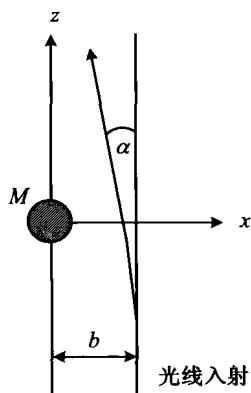
图7.49 光线在 引力场中的偏折全食时星光的偏折。1919年爱丁顿领导了两个日食观测队，分别在巴西和几内亚的两个近海岛上观测了当年5月29日发生的日全食。这两个队的观测结果，与爱因斯坦的预言符合得很好，这也是爱因斯坦广义相对论获得的最有力的观测验证之一。
一般情况下，透镜天体的质量大小和质量分布可以是任意的，且光线轨迹是三维空间中的曲线，它可以绕过透镜天体，也可以从其中穿过。这样我们就可能看到光源的两个像或多重像（图7.48a，b）。如果一个点光源恰好位于光轴之上，则该点光源的像将是一个光环，即所谓爱因斯坦环（图7.48c）。对于银河系中一颗典型的恒星， M\approx M_{\odot} ，距离 \approx10^{4} 光年，理论结果给出它所产生的爱因斯坦环的角直径大约是 2\times10^{-3} 角秒，这是恒星所产生的引力透镜现象的特征角度。这一角度不仅给出了爱因斯坦环的大小，而且给出了两个像之间的典型角间距，以及像所允许的最大偏离。爱因斯坦环首先在射电波段被观测到，现已观测到多个（例如图7.50c）。
下面我们把引力透镜的主要特征做一简要介绍：
根据引力透镜所产生的不同作用，可以分为强、弱和微引力透镜三种主要类型。强引力透镜是指，经过引力透镜后光源的单个像变为多重像，其中最早发现也最著名的例子是 QSO0957 + 561A，B（图 7.50a）。这个光源有两个像，其间距为 6^{\prime\prime} ，且两个像具有极为相似的光谱，它们的辐射流量之比在光学波段和射电波段都大致相同。此外 VLBI 的观测还发现，这两个像在射电波段的辐射特征多处吻合，但两个像之间有大约 540 天的时间延迟，这是由于两个像对应的光程不同。图 7.51 显示另一个类星体 QSO0142 + 100 的双生子像的光谱，其中的时间延迟已被减掉。弱引力透镜是指，透镜的作用没有强到足以产生多重像，但可以引起像的几何形状的畸变。微引力透镜指的是，透镜星系中的恒星，由于自身运动而趋近背景光源发出的光线，使得光线穿过该星系形成像时呈现强度涨落。微引力透镜引起的强度涨落取决于恒星在透镜星系中的分布，它们的质量、速度，以及光源发光盘的大小。跟踪观测强度的涨落，我们就可以提取影响强度的所有有关参数的信息。星系际空间的暗物质质量同样对引力透镜效应有贡献，而且，如果暗物质成团，它们也将引起强度的涨落。对于这样的星系际空间微引力透镜所产生的强度涨落的观测，将给我们提供暗物质的直接观测证据。微引力透镜的观测最初受到观测技术的限制，因为当时很难把引力透镜引起的光变与恒星的内禀光变区分开。但到 20 世纪 90 年代以后，观测技术的进步使这一问题得以解决，其中最重要的是，引力透镜所造成的光变是与颜色（波长）无关的，而恒星的内禀光变却与颜色有关。现在已经有相当多的观测资料证实了微引力透镜现象的存在。例如在“双生子”类星体 QSO0957 + 561A，B 中就发现了微引力透镜的事例，它的像 B 有强度涨落而像 A 却没有。当然在比较像的强度时，两个像之间的时间延迟必需考虑在内。
图 7.50b 哈勃望远镜拍摄的、被称为爱因斯坦十字的类星体 QSO2237 +031 的四重像，中间为透镜星系
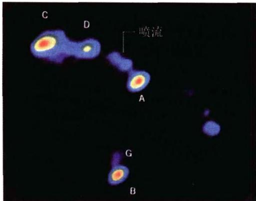
图7.50a 类星体QSO0957+561的 双重像(图中的 A 和 B)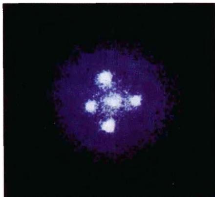
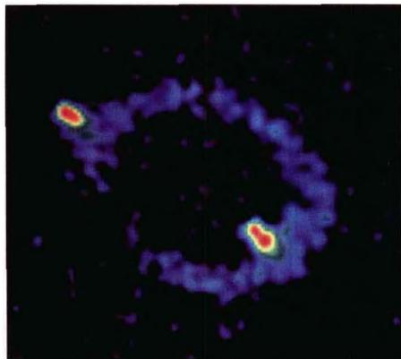
图7.50c 致密射电源MG1131+0456展现的爱因斯坦环根据引力透镜天体的不同，我们看到的像也将具有不同的特点。如果透镜天体可以看成是质点（例如单个恒星），则它一般将产生两个像。而当透镜天体是星系或星系团时，就不能再看作是质点，必须考虑它的质量分布。通常情况下，星系提供的观测引力透镜效应的机会要比单个恒星多得多。光线或者射电波经过星系外围时，将像光线经过单个恒星一样产生偏折。对于位于典型宇宙学距离的一个典型星系， M\approx 10^{11}M_{\odot} 并且距离 \approx 10^{10} 光年，偏折角度大约是1角秒，这样一个角度正好使射电望远镜能容易地观测到爱因斯坦环和多重像。而且，对星系透镜
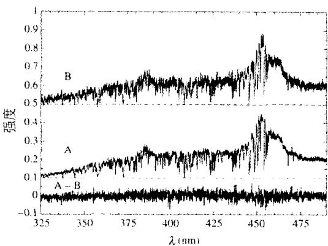
来说，成连线的几率比单个恒星透镜要高得多。利用目前对宇宙中星系密度的总体估计，可以预计，至少有十分之一的星系与另一个背景星系足够好地连成一线，从而产生后者的多重像。此外，星系透镜不仅使外部经过的光线产生偏折，而且使从内部经过的光线产生偏折。同时，因为星系中恒星之间的距离比恒星的直径要大得多，恒星对于光线的遮挡可以忽略不计，即星系对光线足图7.51 类星体QSO0142
+100的双生子像的光谱
够透明。因而，光线可能从星系外部或内部经由几条路径到达观测者，观测者将看到不同方向的像，即光源的多重像（例如图7.50b）。如果光源不是点状的类星体，而是星系或有明显盘状延展的射电源，引力透镜会使源的形状和大小发生畸变。例如，一个盘状的光源将被畸变为一条或几条光弧；并且当连线处在特殊的情况下，光弧展开并且合并，形成爱因斯坦环。
- 星系团的引力透镜作用。帕金斯基(B. Paczyński, 1987)最早指出，星系团A370和C12244中所发现的巨型蓝色光弧(见图7.52)，是被星系团的引力透镜作用强烈变形和放大了的背景星系的像。这一解释后来得到证实，因为发现光弧的红移比星系团的红移要明显大得多。进一步研究表明，强引力透镜作用主要是富星系团核心部分的星系所造成的，而星系团核心以外部分的星系主要产生弱引力透镜作用，特别是产生许多密集的小光弧(arclets, 参见图7.53)。这些小光弧是背景星系的畸变像，是由作为引力透镜的星系团而形成的。目前普遍认为，密集小光弧是星系际暗物质存在的直接观测证据。总之，强引力透镜(特别是巨型光弧)可以用来研究星系团核心部分的物质分布，而弱引力透镜可以用来研究星系团远离核心的区域乃至星系团晕的物质分布。特别是通过对小光弧的研究，可以重构出透镜星系团的二维质量分布图。通过分析畸变的大小与由星系团中心算起的径向距离之间的函数关系，就可能计算出星系团的质量。以上方法已经被实际应用于许多星系团，并且发现，用这一办法推断出的质量，要大于星系团中发光星系的质量总和；这表明星系团中必定有暗物质存在。一般认为，从引力透镜分析推断出的暗物质数量，与其他确定星系团质量的动力学方法得出的结果符合得很好。不过也有人认为，用引力透镜方法确定出来的星系团质量，可能比用位力方法得到的要大。如果是这样，则星系团中实际存在的暗物质质量，可能比动力学方法得出的还要多。当然这也可能是由于，引力透镜方法中的系统误差还没有被完全消除，因此还需要进一步的研究改进。
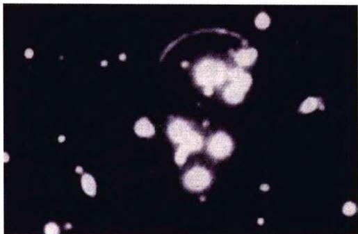
图7.52a 星系团Cl2244-02中的巨型光弧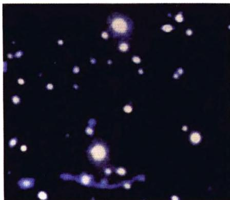
图7.52b 星系团Abell370中的巨型光弧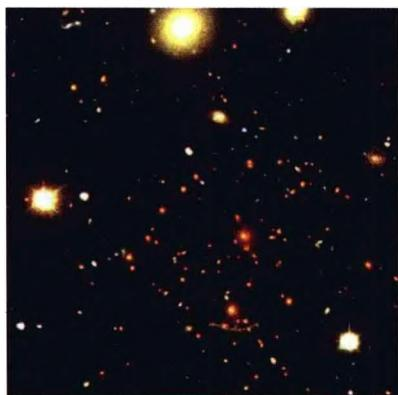
图7.52c 星系团Abell370的整体图像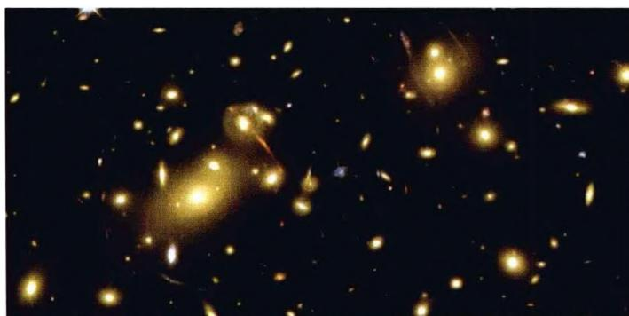
图7.53 星系团Abell2218中的大量 引力透镜光弧，表明暗物质的存在引力透镜今天已成为研究星系、类星体和宇宙学的重要工具。在已经得到的结果之中，除了上述星系团中的暗质量分布外，重要的还有利用“双生子”光信号测量的时间延迟来确定哈勃常数，利用观测到的“双生子”亮度起伏估计类星体的大小，以及宇宙学常数的测定等。光从“双生子”类星体到地球是沿着两条不同的路径传播的，因此光从这两个像到达地球的传播时间就有区别。例如，观测到的QSO 0957+561（图7.50a）“双生子”像A和B之间的时间延迟大约是540天，且像A在像B之前。如果光线路径的几何形状由透镜星系质量分布的理论模型给出，则传播时间之差就确定了到透镜星系和到类星体的总的距离尺度，再结合红移的测量就可以计算出哈勃常数。由“双生子”像的数据得到的哈勃常数的值在35到 90\ \text{km}/(\text{s} \cdot \text{Mpc}) 之间。取值范围过大的原因，是由于透镜星系质量分布的不确定性。由于产生“双生子”像的引力透镜结构相当复杂，它的质量分布不能由像的形状完全确定。今后如能在其他类星体多重像中观测到时间延迟，而引力透镜结构又比较简单，则将可以推断出哈勃常数更准确的值。除此以外，人们很早就了解到，发现类星体引力透镜事例的几率与给定红移处的宇宙学体积大小密切有关。例如相比于 \Lambda = 0, k = 0 的爱因斯坦-德西特模型， \Lambda \neq 0 的平直宇宙以及低密度的开放宇宙，都将产生出更多的引力透镜事例，且前者的作用还要更强一些。因此，对类星体引力透镜事例的观测统计研究，也是确定宇宙学基本参数的重要途径。
我们以前谈到，由于Ia型超新星非常亮，且光度极大时的绝对星等相当确定 (\simeq -19.3^{m}) ，故被用作遥远距离测定的“标准烛光”（图7.54）。20世纪90年代中期，美国的两个超新星研究小组对一批高红移的Ia型超新星做了仔细测量。这两个小组一个是超新星宇宙学项目组(Supernova Cosmology Project，即SCP)，另一个是高红移超新星搜寻组(High-Z Supernova Seach Team)。他们测量了几十颗红移 z > 0.4 的Ia型超新星，其中有6颗 z > 1.25 ，红移最大的是超新星SN1997ff，其红移达到 z = 1.7 。结果发现，这些高红移超新星所示的红移-视星等关系，既不同于当时人们普遍认为的 \Omega_{m}\simeq 1,\Omega_{\Lambda} = 0 平直宇宙的关系，也不同于 \Omega_{m} \simeq 0.3, \Omega_{\Lambda} = 0 的开放宇宙的关系，而是表明，我们的宇宙应当有 \Omega_{m} \simeq 0.3, \Omega_{\Lambda} \simeq 0.7 （见图7.55）。这就是说，我们的宇宙是一个 \Lambda \neq 0 的平直宇宙，而且现在宇宙在加速膨胀（图7.56）。
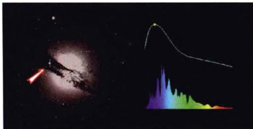
图 7.54a I a 型超新星(箭头所指)及其光变曲线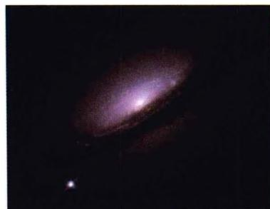
图 7.54b 高红移超新星搜寻组发现的超新星 SN1994d（图左下方）图 7.55 高红移 I a 型超新星的红移-视星等关系。下方的图表示，减去 \Omega_{m} \simeq 0.3, \Omega_{A} = 0 理论曲线后的观测数据结果
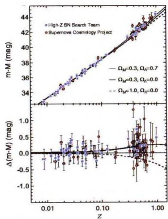
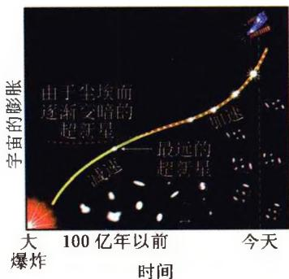
图7.56 宇宙的减速膨胀和加速膨胀下面我们再进一步分析 \Lambda \neq 0 的物理意义。由 R 的动力学方程(7.5.26)(取 k = 0 ), 有
\left(\frac {\dot {R}}{R}\right) ^ {2} = \frac {8 \pi G}{3} \rho + \frac {\Lambda}{3}\tag{7.7.58}
它可以写为
\left(\frac {\dot {R}}{R}\right) ^ {2} = \frac {8 \pi G}{3} (\rho + \rho_ {\Lambda})\tag{7.7.59}
其中 \rho_{\Lambda} \equiv \Lambda / 8\pi G ，它在方程中的地位与物质（能量）密度 \rho 相等同，显然也代表某种能量。因此，不等于零的宇宙学常数就和一种未知形式的能量联系起来了。 \Omega_{\Lambda} \approx 0.7, \Omega_{m} \approx 0.3 意味着 \rho_{\Lambda} / \rho \approx 7/3 ，这表明现在的宇宙，总能量密度是由 \rho_{\Lambda} 主导的。因为 \rho 随宇宙的膨胀而减小但 \rho_{\Lambda} 总保持为恒量，所以一旦 \rho \ll \rho_{\Lambda} ，(7.7.59) 即变为
\left(\frac {\dot {R}}{R}\right) ^ {2} = \frac {8 \pi G}{3} \rho_ {\Lambda} = \frac {\Lambda}{3}\tag{7.7.60}
这一方程的解为
R (t) \propto \exp \left(\sqrt {\frac {\Lambda}{3}} t\right)\tag{7.7.61}
这与前面暴胀宇宙的解(7.7.56)完全相似！这表明在 \Lambda \neq 0 的情况下，宇宙演化的最终结果是加速膨胀。
图7.57a画出了在 \Omega_{m} - \Omega_{\Lambda} 平面上的高红移超新星、宇宙微波背景辐射以及星系团的观测结果，图中三条数据带的交汇处即为 \Omega_{m},\Omega_{\Lambda} 的最佳取值点。图7.57b显示的是 \Omega_{m} - \Omega_{\Lambda} 平面上宇宙年龄的计算结果。所有这些结果综合起来表明， \Omega_{m} \simeq 0.3, \Omega_{A} \simeq 0.7 的平直宇宙模型在各个方面都能与观测相符合。图7.58显示了宇宙学常数不为零时宇宙演化的图像，读者可以把它与图7.27做一
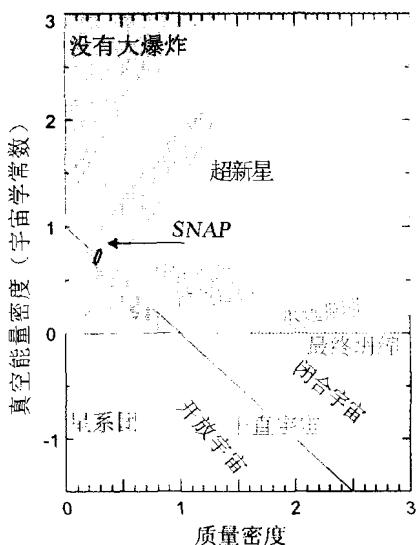
图7.57a \Omega_{m} - \Omega_{\Lambda} 平面上的高红移超新星、宇宙微波背景辐射以及星系团的观测结果，三条数据带的交汇处即为 \Omega_{m},\Omega_{\Lambda} 的最佳取值点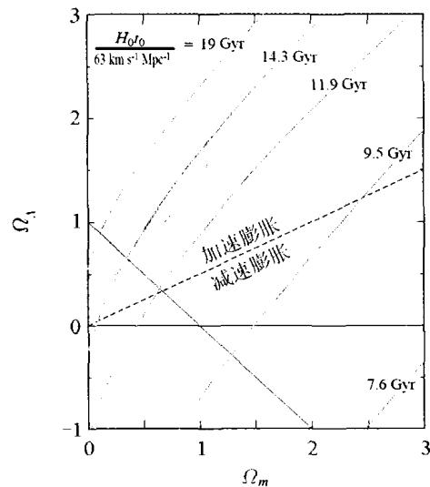
图7.57b \Omega_{m} - \Omega_{A} 平面上的宇宙年龄的计算结果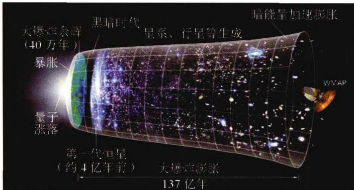
图7.58 \Lambda \neq 0 时宇宙的演化图像对比。为了使 \Omega_{\Lambda} 的值测定得更加精确，NASA 准备于 2010 年发射超新星/加速探测器(Supernova/Acceleration Probe, 即 SNAP, 见图 7.59)，它将测量数千颗遥
远的 Ia 型超新星, 同时还计划做引力透镜的巡天观测。
最后说到 \rho_{\Lambda} 的本质, 它至今还是一个谜, 所以被称为暗能量。有人认为, \rho_{\Lambda} 代表了真空能量, 它在宇宙诞生时就已经具有了, 只不过直到现在, 它的作用才显现出来。但根据量子理论估算出来的真空能量密度, 比实际测到的暗能量密度要高 120 个数量级以上, 这使得理论物理学家大惑不解。下面我们对此做一简要介绍。
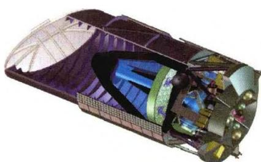
图 7.59 预计于 2010 年发射的超新星/加速度探测器 (SNAP)，将测量数千颗遥远的 Ia 型超新星首先来估计一下真空的能量密度。我们把量子力学的不确定关系简单地写为
\Delta x \Delta p \approx \hbar , \quad \Delta t \Delta E \approx \hbar\tag{7.7.62}
按照狄拉克的观点，真空可以看成是正反虚粒子对不断产生和湮灭的场所，这些虚粒子从真空得到能量 \Delta E ，并在 \Delta t 的时间内湮灭掉。考虑一个虚粒子，它的质量为 m\approx \Delta E / c^2 ，并封闭在一个尺度为 L\approx \Delta x 的盒子内。该粒子的寿命是
\Delta t \approx \hbar / \Delta E \approx \hbar / m c ^ {2}\tag{7.7.63}
粒子的速度为 v \approx \Delta p / m ，利用(7.7.62)第一式可得
v \approx \frac {\hbar}{m \Delta x} \approx \frac {\hbar}{m L}\tag{7.7.64}
因为粒子在 \Delta t 的时间内最远可移动距离 v\Delta t ，我们设定 L = v\Delta t ，这样粒子就不会跑出盒子以外。因而，
L = v \Delta t \approx \frac {\hbar}{m L} \frac {\hbar}{m c ^ {2}}\tag{7.7.65}
L \approx \frac {\hbar}{m c}\tag{7.7.66}
另一方面，真空的能量密度 u_{\text{真空}} 必须至少能够在盒子内产生一对虚粒子，即 u_{\text{真空}} 至少应为
u _ {\text {真空}} \approx \frac {2 m c ^ {2}}{L ^ {3}} \approx \frac {2 m ^ {4} c ^ {5}}{\hbar^ {3}}\tag{7.7.67}
这对粒子中，每一粒子的最大质量可以取为普朗克质量 m_{pl} = \sqrt{\hbar c / G} （见(7.7.7))，因此上式给出
u _ {\text {真空}} \approx \frac {2 m _ {\mathrm{pl}} ^ {4} c ^ {5}}{\hbar^ {3}} \approx \frac {2 c ^ {7}}{\hbar G ^ {2}} \approx 1 0 ^ {1 1 5} \mathrm {erg / cm^ {3}}\tag{7.7.68}
这是一个比较粗略的估计，更细致的考虑得到的结论是 u_{真空} \approx 10^{111} \, erg/cm^{3} 。而另一方面，由宇宙学常数给出的暗能量密度为
u _ {\mathrm{暗能量}} \equiv \rho_ {A} c ^ {2} = \rho_ {c} \Omega_ {A} c ^ {2} \approx 6 \times 1 0 ^ {- 9} \mathrm {erg / cm^ {3}}\tag{7.7.69}
其中 \rho_{c} 为(7.4.57)所示的宇宙临界密度。如果 \rho_{\Lambda} 真的是真空能量，那么(7.7.68)和(7.7.69)两式的结果（即理论结果与观测结果）相差120个数量级以上，这意味着一个发生几率完全可以看作是零的事件，却竟然变成了现实，这样的偶然性很难让人接受。同时，如果真空的能量密度真的如(7.7.68)给出的那么大，则宇宙的膨胀将极其迅速，以致恒星和星系都来不及在引力的作用下生成。
为了减低真空的能量密度，已经提出了一些可能的机制。例如有些粒子物理学家认为，玻色子和费米子对真空能量密度的贡献是符号相反的，但两者不是百分之百完全抵消，而是残余极少量的能量密度，这就是今天观测到的宇宙暗能量。目前更多人的看法是，可以把真空的物态方程写为
p = w \rho c ^ {2}\tag{7.7.70}
其中 w < 0 ，表示真空产生负压，从而推动宇宙加速膨胀。如果真空能量由 \rho_{\Lambda} 代表，则根据(7.5.4)，不随时间变化的 \rho_{\Lambda} （即 \dot{\rho}_{\Lambda} = 0 ）一定有 w = -1 （此时 p = -\rho_{\Lambda}c^{2} ）。如果 w 的值偏离-1，则真空能量可以随时间演化。目前，关于 w 取值的讨论有很多，且不同的取值相应于不同的真空物理机制，例如标量场、规范场等等，但还没有一种理论得到广泛认可。还有人猜测，我们以往的经典真空概念很可能有根本性的错误。总之，看似虚无的真空中实际上蕴藏着许多奥秘，为了破解这些奥秘，人们还要付出巨大的努力。
在即将结束宇宙学这一章时，再回顾一下现代宇宙学的发展历程是有益的。我们知道，从爱因斯坦1917年的广义相对论宇宙学解算起，现代宇宙学理论的诞生已超过90年。但开头50年里的反应是沉寂的，人们并没有认真地看待这一学说，特别是有关宇宙大爆炸的学说。直到20世纪60年代中期，宇宙微波背景辐射被发现，广义相对论的宇宙学模型和热大爆炸理论才真正被人们所重视，现代宇宙学的研究也从此开始了一个新的阶段。宇宙背景辐射与物质的脱耦属于原子过程，相应的能量为cV量级。在此之前发生的一个重要事件是早期核合成，相应的能量增大到MeV量级。要进一步研究宇宙更早期的演化事件，例如暴胀和正反物质不对称起源，就要借助于粒子物理和大统一理论，其相应的能量需要达到 10^{15} GeV。至于宇宙诞生时的普朗克时期，目前可能的理论有超弦、超对称、超引力等，相应的能量高达 10^{19} GeV。表7.3列出了宇宙演化各主要历史时期的遗迹，以及与这些遗迹相对应的物理学研究领域。不难看出，随着人类的视野向宇宙深处不断延伸，观测到的宇宙时间越来越早、温度越来越高，相应的物理学的能量也随之越来越大。这一点充分说明了，现代宇宙学的发展是与物理学的发展紧密联系在一起的。
表 7.3 宇宙各主要历史时期的遗迹
| 宇宙的历史遗迹 | 时间 | 能量尺度 | 对应的物理学 |
|---|---|---|---|
| 时空拓扑 | 10^{-43} 秒 | 10^{19} GeV | 超弦、超对称、超引力? |
| 粒子/反粒子不对称 | 10^{-36} 秒 | 10^{15} GeV | 大统一理论(GUT)、粒子物理 |
| 轻元素生成 | 3分钟 | MeV | 核物理 |
| 微波背景辐射 | 30万年 | eV | 原子物理 |
| 天体生成 | ~10亿年-现在 | 从牛顿力学到现代物理 |
关于宇宙学和物理学之间的关系,狄拉克曾在1968年在意大利第里亚斯特的一次讲演中说道:
有着太多推测的一个研究领域是宇宙学。事实根据凤毛麟角，但理论工作者就忙于构建各种各样的宇宙模型，他们所依据的只是自己喜欢的任何假设。所有这些模型可能都是错的。通常的看法是，自然规律总是现在这个样子，但对此并没有证明。自然规律可能在变，尤其是那些被看作是自然常数的量，可能随宇宙时间而变化。这样的变化将完全打乱这些模型制造者的如意算盘。
狄拉克的这段话，可以反映当时的一些理论物理学家对宇宙学的态度。毕竟，当时宇宙微波背景辐射刚刚发现不久，而在此之前获得肯定的观测事实，只有星系退行的哈勃关系。虽然现在看来狄拉克对宇宙学工作者的批评是过重了，但从他的话里，我们可以体会到这位理论物理大师的信条，即宇宙学必须建立在科学正确的物理学规律之上；同时还可以看到，他实际上在担忧两件事：1)物理规律是否随时间、空间而变？是否可以外推到整个宇宙？2)特别是，物理学常数是否真是不变的常数？这两个问题都是非常深刻的，直到今天，我们都还不能说已经有了百分之百确信的答案。
物理规律的正确性一定要经过实验验证。原子物理、核物理以及粒子物理的许多规律，都已经经过了实验的验证。但应注意到，这些验证实验都是近几十年、最多百余年的时间内，在地球上完成的，因此严格地说，这些已知的物理规律只代表了宇宙中局域时空中的规律。当我们把这些规律用于宇宙学研究时，一方面是对大自然进行探索，看一看这些规律用到大范围的时空会有什么结果；另一方面，也是基于对宇宙学原理的信念：宇宙学原理告诉我们，宇宙中不同地点看到的宇宙图像相同，这实际上表明了，物理规律不应随宇宙地点而变，即局部宇宙中应包含了宇宙整体的信息。否则，如果宇宙各处的物理规律不尽相同，那么宇宙演化的最终结果就不可能是均匀各向同性的了。当然，本质上说来，宇宙学原理也只是一个假设，就像狭义相对论的相对性原理和光速不变原理实际上都只是假设一样。所幸的是，在我们今天所看到的范围内，还没有发现宇宙中任何一个地方，那里的物理规律和地球上的有所不同。
排除了随空间地点变化的可能性,物理规律是否可能随宇宙时间变化?这也正是狄拉克最为担心的一点。随时间变化包含两方面的含义:一是物理规律本身的形式(方程式或函数关系)随时间变化,即不同的宇宙时间,物理规律的数学形式发生改变,例如某个时期万有引力(或库仑力)与距离平方成反比,而另一个时期变为与距离立方成反比,甚至变成其他类型的函数关系;等等。二是描述物理规律的数学方程形式不变,但其中的物理常数随宇宙时间而变化,正像狄拉克所说的那样。
我们熟悉的基本物理常数有真空中的光速 c ，万有引力常数 G ，普朗克常数 h (或 \hbar ), 电子的电荷 e 以及质量 m_e , 玻尔兹曼常数 k 等。例如万有引力常数 G , 其实早在 1937 年, 狄拉克本人就曾怀疑 G 是否随时间而变, 他认为有可能 G \propto t^{-1} 。1961 年布朗斯 (C. Brans) 和迪克 (R. Dicke) 提出标量-张量引力理论, 更是假设 G 是某个标量场的倒数, 而这个标量场则是时间的函数。如果 G 真的是像狄拉克猜想的那样随时间逐渐变小, 则几十亿年中的长期积累, 对于地球和星体的演化会产生可观的效应。例如, 研究指出, 如果过去的 G 较大, 则太阳的光度会大一个正比于 G^8 的因子, 而地球的轨道半径 r_\oplus 会小一个正比于 G^{-1} 的因子。地球上的温度正比于 (L_{\odot} / r_{\oplus}^2)^{1/4} , 因此会增高一个正比于 G^{2.5} 的因子。如果 G \propto t^{-1} , 那么 10 亿年前地球表面的温度就会高于水的沸点, 地球上的生命也就将不存在了。此外, 如果过去的 G 较大, 恒星的引力收缩就会较快, 这将使恒星的热核反应进行得更加迅速, 从而使恒星的寿命变短。对于宇宙早期核合成, 较大的 G 将使宇宙膨胀得较快, 这样核合成开始时剩下的中子就较多, 从而产生较多的氦, 与观测到的氦丰度不符。再有, G 变大时引力增强, 行星就靠近太阳, 行星的公转周期就会变短; 反之, G 变小时, 公转周期就会变长。行星的公转周期有没有变化, 可以同原子钟来进行比较, 因为原子钟的走时与万有引力无关。利用雷达信号从水星和金星表面的反射并用原子钟测时, 可以精确测定它们的绕日轨道周期, 这样得到的 G 的变化率是
\left| \frac {\dot {G}}{G} \right| \leqslant 4 \times 1 0 ^ {- 1 0} / \text {年}\tag{7.7.71}
以上这些分析都表明,在宇宙过去的时间内,万有引力常数 G 看来不会有明显的变化。
对电子的电荷 e 和质量 m_{e} 也可做类似的分析。如果 e 随时间变化，就会对原子结构和原子核的性质产生影响，例如放射性同位素的半衰期会发生改变。计算表明，如果 e 的减小速率为 5 \times 10^{-11}/年 ，宇宙中的饿同位素 (^{187}\mathrm{Os}) 就该几乎衰变光了，但至今地壳中仍有不少 {}^{187}Os 存在。由 {}^{187}Os 现在的丰度可以推断出，e 的相对年变化率应当小于 10^{-13}/年 。同样，如果电子的质量 m_{e} 发生变化，也会导致 {}^{187}Os 的衰变速率加快。由此推断出， m_{e} 的相对变化率不应大于 4 \times 10^{-13}/年 。而由恒星演化的分析得到的结果是， m_{e} 的时间变化率 <4 \times 10^{-12}/年 。
在原子物理中还有一个重要的基本物理常数，即精细结构常数 \alpha \equiv e^{2}/\hbar c \simeq 1/137 。它是一个无量纲的常数，表示电磁作用的强弱程度，直接影响到原子或离子光谱线的细节，例如原子能级精细结构的能级间距。把遥远星体中某些原子或离子的光谱和地面上同种成分的光谱相比较，就可以测定 \alpha 有没有变化。已经对一系列高红移天体的光谱做过这样的分析，例如从红移 z = 0.2 的射电星系氧离子光谱， z = 0.68 的中性氢原子射电 21\mathrm{cm} 谱线，直到 z \simeq 3 的类星体硅离子光谱， z \simeq 3.5 的类星体镍、铬、锌离子光谱等，都没有发现 \alpha 随时间有明显的变化，其可能的时间变化率最多是 \dot{\alpha} / \alpha \simeq 6 \times 10^{-16} /年。
20世纪末开始，曾有过一场对光速 c 是否可变的热烈讨论。我们知道，光速不变是狭义相对论的基本原理(假设)之一。然而，爱因斯坦在表述这一原理时，实际上只是强调了不同的惯性参考系中，真空中的光速都是 c ，他并没有说 c 不可以随宇宙时间而变。事实上，爱因斯坦本人在1911年就曾数次提到， c 也许会随时间而变。在20世纪30年代，光速可变曾被用来解释宇宙学红移的产生。20世纪90年代末，理论物理学界曾提出过多种光速可变的理论，这其中有的基于弯曲时空的量子场论，有的基于弦理论，有的认为不同能量的光子在真空中的速度不同，即光在真空中也会发生色散，等等。光速可变对宇宙学的一个直接好处是，如果宇宙极早期的光速远远大于现在的光速，则不需要深奥难懂的宇宙暴胀理论，就可以轻松解决“平性”和“视界”两大疑难，这无疑对宇宙学家具有巨大的吸引力。但遗憾的是，光速可变理论无法得出宇宙初始密度扰动的H-Z谱，而暴胀宇宙论却可以。另一方面，现代物理学中时间和空间的单位，都是用光来定义的，故恒定不变的光速不但是狭义相对论的支柱，也是现代物理学的支柱。光速 c 的变化，比其他物理常数的变化对物理学造成的震撼乃至破坏要大得多。
总之，直到目前为止，我们还没有真正发现，上面提到的诸多基本物理常数随时间有明显变化。也就是说，从宇宙诞生时刻起直到现在，这些常数的值就一直保持不变。于是就产生了另一个问题：为什么宇宙诞生时这些物理常数是像现在这样取值，而不是取其他值，例如比现在的值再大一点或小一点？这个问题是很难回答的。如上所述，如果这些常数（甚至只要其中之一）与现在的值有所不同，宇宙的演化就完全可能是另一个样子，而且也许就不会产生今天的地球和人类。有一个理论叫作人择原理（Anthropic Principle），它的意思是，只有这些物理常数像现在这样取值，才能演化出有智慧的生物，包括我们人类；如果这些常数的值不是这样，人类就不会存在，上面这个问题也就不会有人提出了。当然，这一理论是无法用实验来验证的。看来我们唯一能做的，就是庆幸我们宇宙中的所有物理常数正好是现在这样取值。
最后，再回到物理世界的统一问题上来。众所周知，物理学追求的目标是物理世界的统一，这其中包含两方面的含义：1)组成自然界万物的是少数几种基本粒子；2)支配万物运动的是统一的相互作用(力)。迄今为止，粒子物理的研究表明，基本粒子可以分为轻子和强子两大类：轻子包括电子、 \mu 子、 \tau 子，以及分别与之对应的3种中微子 \nu_{\mathrm{e}}, \nu_{\mu} 和 \upsilon_{\tau} ，且每一种轻子都有对应的反粒子。带电的轻子参与弱作用和电磁作用，而不带电的轻子（如中微子）只参与弱作用。强子例如质子、中子和介子，它们除参与弱作用和电磁作用（假如带电）外，还参与强作用，且强作用力远远超过其他的作用力。轻子族的品种只有上述6种（每一种都包括正、反粒子），而强子族的品种却多达800余种，这暗示着强子内部还应当有更深层次的结构。按照现代标准模型，强子是由夸克构成的，夸克有6种不同的“味”，每一味又分3种不同的“色”（这里的“味”和“色”只不过是趣味性的称呼），且每一种夸克都有对应的反夸克。因此，强子并不算是基本粒子。目前公认的基本粒子是：夸克和轻子，再加上在粒子间传递相互作用力的所谓规范粒子或中间玻色子，如传递电磁力的光子，传递弱作用力的 W^{\pm} 和 Z^{0} 粒子，传递强作用力的胶子，以及传递引力的引力子等。至于夸克和轻子是否已是物质的终极本原，它们是否还具有更深一层的结构，现在还无法定论。目前，理论物理学家仍然在为这个问题的解答而冥思苦索。
再谈关于相互作用力的统一(参见图 7.60)。我们知道,自然界的四种基本相
互作用中，弱作用力和强作用力都是短程力，电磁力和引力是长程力。爱因斯坦在建立了相对论理论后，其后半生的精力几乎全部耗费在统一场论的研究上。他的目的是通过弯曲时空，把两个长程力即电磁力和引力统一起来，但最后他的一切努力都失败了。实际上，第一个实现统一的是弱作用力和电磁力，把它们统
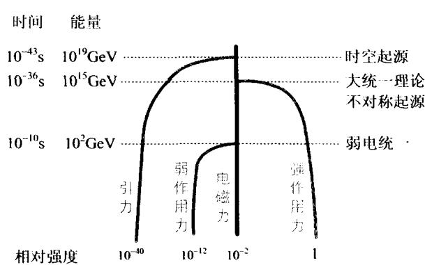
图 7.60 四种基本相互作用力的统一一起来的理论称为弱电统一理论(1967年)，它是一种有对称性自发破缺的规范场理论。这一理论认为，在能量高于大约100 GeV时，弱作用力与电磁力具有内部对称性，是同一种力，称为弱电力，且所有传递弱电力的媒介粒子的质量都为零。当能量降低时，一种所谓希格斯机制的物理效应就把弱、电内部的对称性破坏了。相应的效果是，某些传递作用力的媒介粒子（即 W^{\pm} 和 Z^{0} 粒子）获得很大的质量，这使得它们传递的力变得很微弱，力程变得很短，从而成为弱作用力。而另一些媒介粒子的质量仍然保持为零，它们就是传递电磁力的光子。显然，要验证弱电统一理论，实验所需的能量必须达到100 GeV以上。欧洲核子研究中心(CERN，见图
7.61)的大型质子-反质子对撞机正好具有这样的能量( \sim500\ GeV )。1983年，CERN的实验发现了 W^{\pm} 和 Z^{0} 粒子，从而最终肯定了弱电统一理论的正确性。
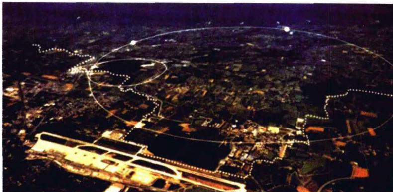
图 7.61 欧洲核子研究中心(CERN)加速器鸟瞰试图把弱电力和强作用力进一步统一起来的理论，称为大统一理论（Grand Unified Theorie，即GUT）。这一理论在20世纪70年代获得很大发展，其中最简单而又具代表性的是SU(5)大统一理论，它把强、弱、电磁作用统一为一种规范作用。这一理论预言了重子不守恒，将导致质子衰变，其寿命为 10^{29} \sim 10^{31} 年。同时，该理论还预言了磁单极子的存在，并预言了它们的质量（ \sim 10^{16}\mathrm{GeV} ）和磁荷的大小。大统一理论对于宇宙极早期的演化有重要的作用：它可以解释宇宙中正反物质不对称的起源；它与暴胀宇宙论结合起来，可以解释宇宙中巨大的光子数与重子数之比；同时，它还提供了一种可能的暗物质粒子的候选者，即磁单极子。但是，无论是质子衰变还是磁单极子，至今都还没有获得实验和观测的肯定。特别是磁单极子，到现在为止，一个都还没有被发现。因此，远不能说大统一理论已经获得成功。从图7.60看到，电磁力、弱作用力与强作用力之比，分别是 10^{-2} 和 10^{-12} 。按照大统一理论，当能量达到 10^{15}\mathrm{GeV} 时，这3种作用力将表现为无任何差别的同一种作用力，从而达到统一。这一能量正好相应于暴胀宇宙真空相变的能量。那么，我们的加速器的能量达到多大了呢？目前，地球上最大的加速器是美国费米实验室的质子-反质子对撞机（图7.62），加速器的直径有 2.2\mathrm{km} ，每束粒子的能量接近 10^{3}\mathrm{GeV} 。CERN正在建造的大型强子对撞机（LHC），预计可把能量提高到 10^{4}\mathrm{GeV} 。但即使如此，加速器目前达到的能量尺度与大统一的能量尺度 10^{15}\mathrm{GeV} 相比，还有着巨大的差距。
最终把引力也统一进来，实现四种基本相互作用的统一，是物理学追求的终极目标。尽管大统一理论还没有成功，但理论物理学家早已开始为此终极目标而努力。从20世纪60年代到70年代，人们就做了各种尝试，包括多维时空理论和超引力理论，但没有成功。其中的主要原因是，在“点”模型的量子场论框架里，凡涉及引力时，必定出现无穷多的发散项，使理论不可重正化，也不能自洽。由于没有一个与量子力学原理自洽的引力理论，就使得包括引力在内的统一理论的尝试总是无法继续下去。人们意识到，爱因斯坦的引力理论和量子力学似乎不相容，20世纪物理学的这两大支柱看来无法结合到一起。
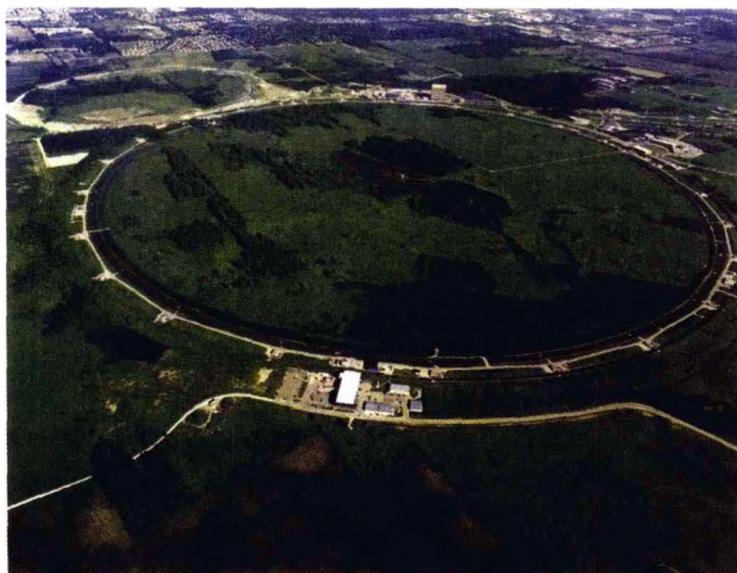
图 7.62 美国费米实验室加速器鸟瞰20世纪60年代末开始出现的弦理论，使人们看到了解决问题的希望。如果用一维的伸展的弦来代替点状粒子结构，那么就可以避免理论中无穷大的出现。但这些理论需要高维数的空间，以便把费米子与玻色子用超对称性统一起来。70年代中期发展起来的超弦理论，解决了原来弦理论中的一些困难（例如超光速的“快子”），并把原有弦理论的26维时空降为10维。在超弦理论中，粒子是弦的激发态，粒子间的基本相互作用就是弦的分裂与接合。此外，弦理论中还包含了黎曼几何，因此在低能时，弦理论可以还原为熟知的广义相对论场方程。这样，超弦理论就统一了广义相对论和量子论，从而被人们认为是最有希望的“终极统一”理论。
但是，超弦理论还有一些重要的问题没有解决。其一是这个理论的时空维数。
当时空维数大于4时，多余的维数会蜷缩成很小的球。但以这样的时空来描述核力时，理论的真实性就很难被接受。其二是关于这一理论的实验检验。要检验超弦理论的正确性，必须达到 10^{19}\mathrm{GeV} 的能量，这相应于宇宙创生时的普朗克能量。只有在接近这一能量时，超弦理论和其他理论截然不同的性质才能显现出来。如前所述，这样高的能量在地球实验室中是永远达不到的。但当我们的目光投向浩森的宇宙时，希望之光再次点燃。其实早在20世纪70年代中期，学者们就认识到，早期宇宙提供了地球实验室中无法实现的高能条件。宇宙本身就是一个天然实验室，有人把它戏称为“穷人的加速器”。在遥远的宇宙深处，我们可能发现大统一理论、乃至超弦理论所需的极高能物理环境，以及那时相应的演化遗迹。这些遗迹就像考古发现一样，能够帮助我们理解当时的宇宙中发生的物理过程。
回顾过去30多年的历史，我们看到，在1975年以前，粒子物理学和宇宙学还被看作是相互独立的研究领域，当时没有几个科学家会认为，一个领域内的发现能够推动另外一个领域的研究。而现在，基于对物理世界统一性的认识和探索，粒子物理学和宇宙学日益紧密地走在一起了。越来越多的粒子物理学家加入了宇宙学的研究队伍，出现了称为“粒子宇宙学”的新研究领域。目前，这一领域的科学家们正在期待即将完成的项目将会带来的新成果：这些项目包括CERN的大型强子对撞机(LHC)，大面积伽马射线空间望远镜，以及普朗克卫星，它将以前所未有的精度测量宇宙微波背景辐射。如果一切顺利的话，粒子物理学和宇宙学的研究又将大大向前推进一步。特别是粒子物理学，又将像30年前那样，呈现一片充满活力、振奋人心的景象。人们最终会从宇宙的纷繁复杂中发现，主宰宇宙的基本定律竟然是如此单纯、简洁和壮丽。正如爱因斯坦的一句名言：
宇宙中最不可以理解的是——宇宙是可以被理解的。
不管前面还有多少困难，人类正在朝着理解宇宙“终极奥秘”的方向前进。